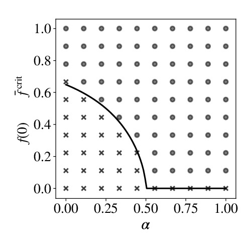
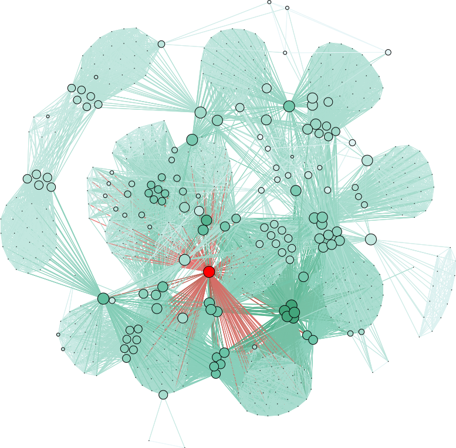
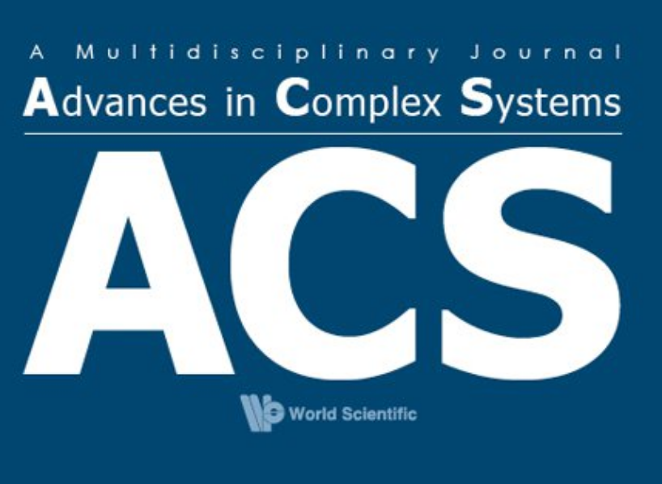
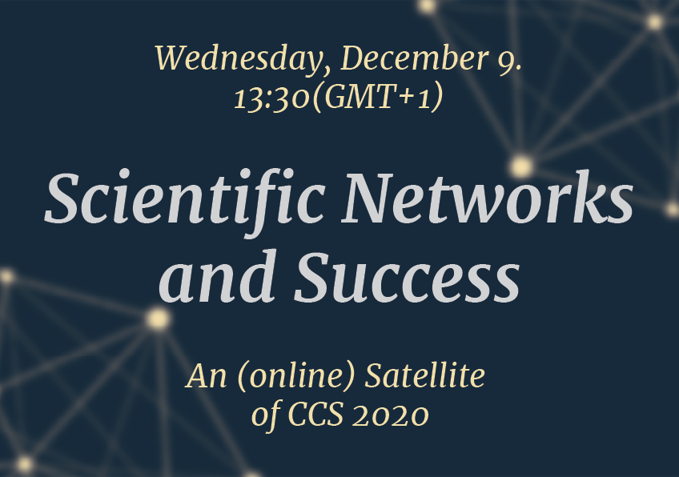
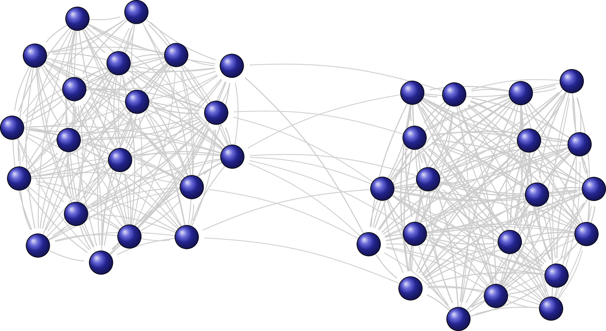

|
Welcome to the Chair of Systems DesignOur research can be best described as data driven modelling of complex systems with particular emphasis on social, socio-technical, and socio-economic systems. We are a truly interdisciplinary team of about 15 people from various disciplines (statistical physics, applied mathematics, computer science, social science, engineering). And, yes, we do all the cool stuff, from big data analysis to multilayer network models, from social software engineering to predictions of scientific success - not to forget our research on polarization in political systems, cooperation in animal societies, and life cycles of R&D networks. Just click through our publications, funded projects, teaching or media coverage. |
||
Should the government reward cooperation?

We derive analytical expressions for the critical bonus needed to make cooperation as attractive as defection. We show that for one information regime the critical bonus increases with the level of cooperation, while in a second regime the bonus decreases with the level of cooperation. In this second regime, full cooperation can be achieved once a cold-start problem is solved. See our paper here. Quantifying the importance of firms by means of reputation and network control
The reputation of firms is largely channeled through their ownership structure. We use this relation to determine reputation spillovers between transnational companies and their participated companies in an ownership network core of 1318 firms. We then apply concepts of network controllability to identify minimum sets of driver nodes (MDS) of 314 firms in this network. See our paper here. Scientific Networks and Success

Every researcher is affected by how scientific performance is measured. How should it be measured? Do we have the right data to do it? If you eager to have answers to these questions, come to our Satellite Workshop Scientific Networks and Success of CCS 2020. Lead Agency Project granted
We are happy to announce that our Lead Agency Project "Signed Relations and Structural Balance in Complex Systems: From Data to Models" was granted by the SNF and NCN. We will carry out this project together with Prof. Holyst's group of Physics in Economy and Social Sciences at Warsaw University of Technology (Faculty of Physics). Was ist ein Modell und wozu brauchen wir es?
Dazu ist am 12. März 2020 auf dem Blog des Verbands Digital Humanities im deutschsprachigen Raum ein Beitrag von Ramona Roller erschienen. |
Call for Papers - Scientific Networks and Success

Researchers along with their research institutions are increasingly evaluated according to scientific performance metrics. Yet how should they be measured? And is the required data available? Also, Modern research is predominantly a team endeavor in which success and failure strongly depends on social forces among collaborators driven by intrinsic and extrinsic motivators, behavior and strategy. Do we have the right models to account for these phenomena? If these questions drive your research, you are interested in our Special Issue on Scientific Networks and Success. SNS2020 program is online

The program of our Satellite Workshop Scientific Networks and Success of CCS 2020 is online. It will take place online on December 9, 2020. You can also download the poster of the Satellite. New theory explains political polarization
Scientists at the CSH expand an old theory of balance to explain the emergence of hyperpolarizationA new model of opinion formation shows how the extent to which people like or dislike each other affects their political views —and vice versa. The resulting division of societies can even become a matter of life and death, as the current crises show. Network Analysis in R
The latest version of our R library The library allows studying multi-edge networks using the framework of the generalised hypergeometric ensemble of random graphs. Install the package by running |
Higher-order models capture changes in controllability of temporal networks
Our paper Higher-order models capture changes in controllability of temporal networks has been accepted to be published in Journal of Physics: Complexity HONS2020 program is online
The program of our HONS satellite at NetSci 2020 is online at https://uzhdag.github.io/hons_web/. It will take place online on September 17, 2020. HONS is the NetSci satellite for researchers that try to understand what we miss when we analyze graphs and network abstractions of complex systems. Its focus is on cutting-edge Higher-Order Network modelling techniques, which generalize network science techniques to models that account for higher-order dependencies in data on real systems. GHYPERNET in the top 40!
The RStudio blog has listed our Let's spend the night together?

Bechstein's bats form groups of different size to spend the day together in several roosts. At dusk, these groups dissolve, at dawn they may re-merge. So, what is a typical group size? And how long does a group use the same roost? We answer these questions by analyzing empirical data from two colonies. What is more, we also provide an agent-based model to reproduce these findings. See our paper here. The law of proportionate growth and its siblings
We combine the law of proportionate growth with additive growth terms, to develop an agent-based modeling framework with vast applications in social and economic systems. The paper discusses phenomena as diverse as saturated growth, competition, stochastic growth, investments in random environments, wealth redistribution, opinion dynamics and the wisdom of crowds, reputation dynamics, knowledge growth, and the combination with network dynamics. Read more on ArXiv |